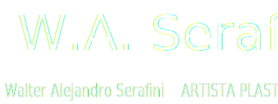
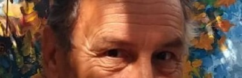
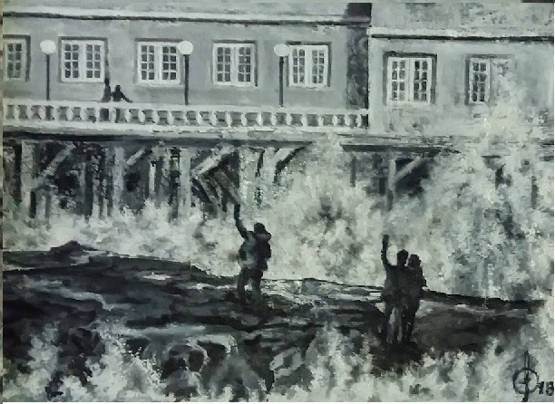
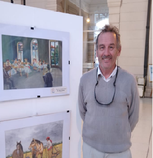
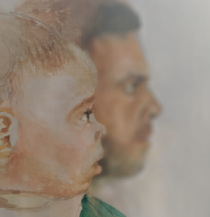
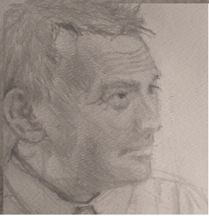

Selfie - Oleo sobre tabla - (2015)

Serafini, inmerso en una busqueda de la relacion entre el color y el sentir de una obra, sorprende con "Selfie" consiguiendo la maxima expresividad solo en escala de grices
Informese sobre los proximos Workshop de Serafini
Bio

Biografia del artista
Obras

Obras de Walter Serafini
Contacto

Contacte con Serafini